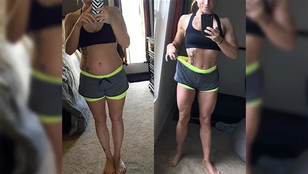
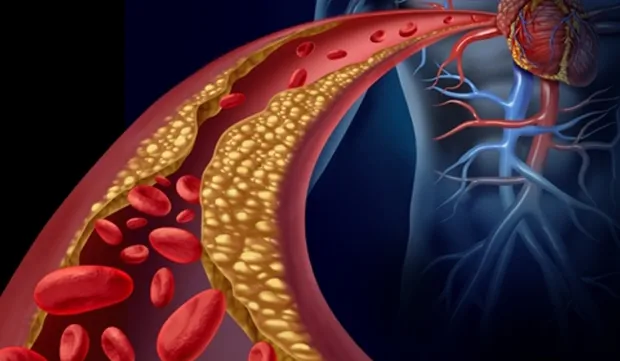
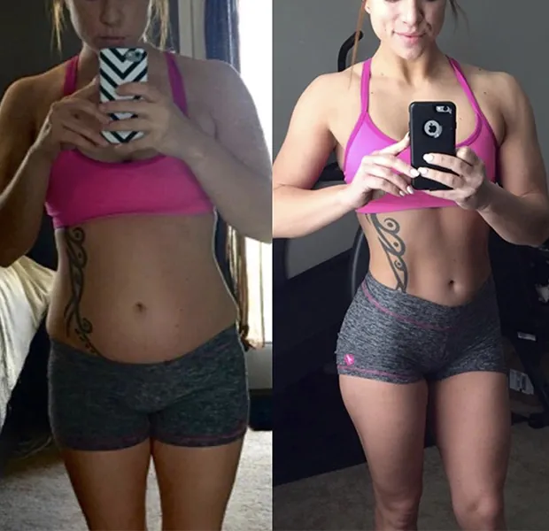

Após ser chamada de gorda pelo marido e trocada por amante, mulher emagrece 22,7kg e conta sua história!
Luciana veio ao programa contar sua trajetória contra a obesidade.
Uma história de superação tem chamado a atenção das mulheres nas redes sociais. O burburinho foi tão grande que a Globo fez uma matéria especial no Programa Bem-Estar sobre esse caso.
Nossas leitoras perderam o programa e pediram para nós contarmos a história da Luciana, de 37 anos, que emagreceu 22kg em apenas 12 semanas após ser humilhada e largada pelo marido.
Como ela fez isso? Qual foi o segredo? O que aconteceu? Você confere as respostas para essas e outras perguntas agora mesmo!
Obesidade após a gestação, humilhação e abandono
Luciana tinha um casamento feliz com Jorge, seu primeiro marido, sempre tiveram uma vida sexual ativa e se amavam muito, foi então que ela engravidou de Gabriel, tendo engordado 25kg durante a gestação. Luciana não conseguiu mais recuperar o corpo que tinha antes de engravidar e foi aí que os problemas começaram.
Ela começou a notar que Jorge não tinha mais o mesmo interesse por ela, chegava em casa tarde quase todas as noites, estava frio e a vida sexual do casal praticamente já não existia mais.
Luciana não tinha mais coragem de usar roupas curtas e apertadas, não ia mais a praia, tinha vergonha até mesmo de ficar sem roupa perto de Jorge. Ganhou 25kg e não sabia o que fazer para reverter essa situação caótica em que se encontrava.
Aos poucos a depressão tomou conta e Luciana precisou até tomar remédios controlados para dormir e conter a ansiedade.
“Eu amava meu marido, mas sentia que poderia perdê-lo a qualquer momento”, revelou no programa.
Foi então que as suspeitas de Luciana se confirmaram, Jorge tinha uma amante e não estava disposto a recuperar seu casamento.
"Questionei o motivo daquilo estar acontecendo e porque ele não me contou antes, ele disse que eu estava gorda como uma porca, e não tinha mais nenhum desejo por mim, meu mundo caiu e senti que era hora de dar um basta na situação".
A solução veio por meio de cápsulas naturais
Com depressão, abandonada pelo marido e com 25kg a mais, Luciana começou a tentar emagrecer pelos meios convencionais, após uma visita a nutricionista, começou a comer de 3 em 3 horas e fazer caminhadas matinais, no início até funcionou um pouco, mas a rotina de trabalhar fora e ainda cuidar de Gabriel fez com que o pouco que ela conseguiu fosse por água abaixo.
Quase desiludida, ela encontrou uma solução que realmente fazia sentido, com resultados rápidos e sem contraindicações.
"Uma amiga que tinha acabado de chegar dos Estados Unidos me disse que havia conseguido emagrecer 18kg em 2 semanas tomando apenas duas cápsulas por dia, e que muitas celebridades americanas estavam usando esse suplemento por lá".
A amiga de Luciana estava se referindo ao conceituado suplemento chamado Redufit. "Pesquisei na internet e vi que haviam muitas pessoas satisfeitas, então não pensei duas vezes, comprei 5 potes e comecei o tratamento".
Resultado Extraordinário em Pouco Tempo
Primeiras 3 semanas
Com muita empolgação, ela começou a tomar nos horários descritos no rótulo. Não mudou a dieta e não fez exercícios.
Ao fim da primeira semana, havia perdido 3kg apenas em retenção e inchaço. “Minha pele parecia mais fina e firme”, afirma Luciana.
Na segunda semana, começou a analisar suas pernas , barriga e bumbum, percebendo uma melhora sensível, mas positiva.
No 21º primeiro dia de tratamento, ao se pesar, levou um choque: 10kg a menos. “Eu não estava fazendo dieta. Não imaginava que fosse emagrecer tão rápido”, revelou.
Da 3ª a 10ª semana
Os grandes avanços vieram nesta segunda fase. Com muito trabalho para fazer, colocou o celular para tocar o alarme nos horários certos, e não perder nenhuma dose.
Valeu a pena: na quinta semana, as mudanças eram nítidas. “Surreal, eu diria”.
Últimas 2 semanas
Na décima semana, já estava com 18kg a menos e uma pele mais firme, dura.
Aquele aspecto “casca de laranja” e odiada “pochete” parecia não existir mais. A flacidez e a gordura localizada tinham sido reduzidas e até mesmo algumas estrias sumiram.
Em somente 7 semanas, ela saiu de um corpo cheio de gordura localizada, celulites para uma transformação incrível, sem dores ou riscos; totalmente natural.
“No total foram eliminados 22kg em menos de 3 meses”, relembra entusiasmada.
O Recomeço para Luciana
Com o corpo dos sonhos e um novo namorado, ela voltou a ter grande autoestima e mais confiança.
“Posso ir para praia sem vergonha... Posso usar calça legging sem ficar marcando aquelas gordurinhas. Renovei meu guarda-roupa!”, conta em tom de riso.
Especialistas do Bem-Estar confirmaram os efeitos do Redufit de modo científico, analisando cada componente presente nas cápsulas.
Aprovado pela Anvisa e pelo Ministério da Saúde, esse suplemento é seguro, tem efeitos rápidos e custa menos do que qualquer tratamento estético.
Onde Comprar
Com o sucesso da nossa matéria especial, contando a vida de Luciana, a fabricante do Redufit entrou em contato conosco.
Nós dissemos que seria muito proveitoso dar um desconto para quem lesse essa história de sucesso. Eles concordaram na hora.
Conseguimos negociar um desconto incrível com eles, e você vai ganhar até 55% de desconto até o dia 21 de Agosto de 2018 ou até esgotarem os estoques
Obrigado, Luciana, por contar a sua história em primeira mão para nós!
Temos certeza que sua vitória será um combustível para todas as mulheres que desejam ter um corpo sem gorduras, sem furinhos e sem dobrinhas.
PROMOÇÃO VÁLIDA ATÉ 15 de Dezembro de
Potes disponíveis neste momento: